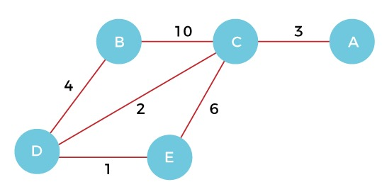

What is Kruskal's Algorithm?
Kruskal's Algorithm is used to find the minimum spanning tree for a connected weighted graph. The main target of the algorithm is to find the subset of edges by using which we can traverse every vertex of the graph. It follows the greedy approach that finds an optimum solution at every stage instead of focusing on a global optimum.
The algorithm works as follows:
- 1. First, sort all the edges from low weight to high.
- 2. Now, take the edge with the lowest weight and add it to the spanning tree. If the edge to be added creates a cycle, then reject the edge.
- 3. Continue to add the edges until we reach all vertices, and a minimum spanning tree is created.
Kruskal's Algorithm Code
Algorithm Kruskal(E, cost, n, t)
{
Construct a heap out of the edge costs using Heapify;
for i:= 1 to n do parent[i] = -1;
// Each vertex is in a different set.
i := 0; mincost = 0.0;
while ((i < n-1) and (heap not empty)) do //adds the smallest edge that connects two previously unconnected components of the tree.
{
Delete a minimum cost edge (u,v) from the heap
and reheapify using Adjust;
j = Find(u); k = Find(v);
if (j != k) then
{
i:= i+1;
t[i,1] := u; t[i,2] := v;
mincost := mincost + cost[u,v];
Union(j, k);
}
}
if ( i != n-1) write( “No spanning tree” );
else return(mincost);
}

- Step 1.First, add the edge DE with weight 1 to the MST.
- Step 2.Add the edge DC with weight 2 to the MST as it is not creating the cycle.
- Step 3. Add the edge CA with weight 3 to the MST, as it is not creating any cycle or loop.
- Step 4.Now, pick the edge DB with weight 4 to the MST, as it is not forming the cycle.
- Step 5.After that, pick the edge CE with weight 6. Including this edge will create the cycle, so discard it.
- Step 6.After that, pick the edge BC with weight 10. Including that edge will create the cycle, so discard it.